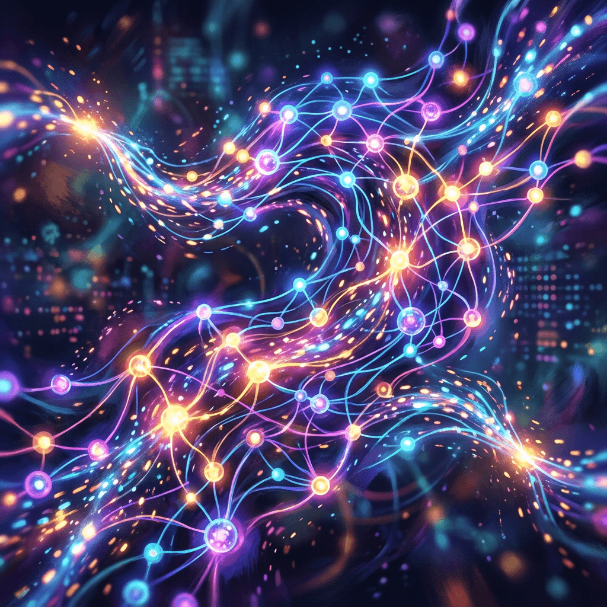

Урок 2: Автоматическое дифференцирование
ML-инженер • Архитектура нейросетей с нуля
Чтобы нейросеть училась, ей нужно понимать, в какую сторону и на сколько менять свои веса. Для этого вычисляются частные производные функции потерь по каждому параметру. В этом уроке мы разберем математику и код движка автодифференцирования PyTorch Autograd.
Каждая операция над тензором создает узел в графе. Листья графа (Leaf Tensors) — это обычно веса модели или входные данные. Узел хранит саму операцию и ссылку на функцию для вычисления её производной.
Рассмотрим простейшую цепочку вычислений:
import torch
# require_grad=True указывает, что для x нужно собирать историю операций
x = torch.tensor(2.0, requires_grad=True)
y = x ** 2
z = 2 * y + 3
print("z:", z) # Выведет 11.0
print("Ссылка на операцию (grad_fn) у z:", z.grad_fn) #
print("Ссылка на операцию (grad_fn) у y:", y.grad_fn) # Математически, согласно правилу дифференцирования сложной функции (Chain Rule):
При x = 2.0 значение производной dz/dx должно быть равно 8.0. Проверим это в коде с помощью метода .backward().
# Запуск обратного прохода от конечной точки графа (z)
z.backward()
# Градиент dz/dx теперь записан в атрибут .grad тензора x
print("Градиент x (dz/dx):", x.grad) # Выведет: tensor(8.)Если z — это не скаляр, а вектор или матрица, то честное вычисление производных требует построения Матрицы Якоби (матрицы всех частных производных). Однако PyTorch оптимизирован для работы со скалярными лоссами. Если вызвать .backward() для нескалярного тензора без аргументов, возникнет ошибка.
x = torch.tensor([1.0, 2.0, 3.0], requires_grad=True)
y = x * 2
z = y ** 2 # z теперь вектор: [4.0, 16.0, 36.0]
# Чтобы запустить backward для вектора, нужно передать "внешний градиент" (вектор весов)
# Обычно это вектор из единиц той же формы
external_gradient = torch.tensor([1.0, 1.0, 1.0])
z.backward(gradient=external_gradient)
print("Градиенты x:", x.grad) # Выведет: tensor([4., 8., 12.])Хранение графа вычислений требует огромного количества оперативной памяти (VRAM) на GPU. На этапе валидации или тестирования модели градиенты считать не нужно. Для этого граф отключают.
Полностью блокирует построение графа для всех операций внутри блока. Экономит память и ускоряет инференс.
x = torch.tensor(2.0, requires_grad=True)
with torch.no_grad():
y = x ** 2
print("Есть ли grad_fn внутри no_grad?:", y.grad_fn) # Выведет: NoneИспользуется, когда нужно "отрезать" конкретный тензор от текущего графа вычислений, создав его копию, которая не будет требовать градиентов.
x = torch.tensor(2.0, requires_grad=True)
y = x ** 2
# Отвязываем y от истории вычислений
y_detached = y.detach()
z = y_detached * 3
print("Зависит ли z от x?:", z.requires_grad) # Выведет: FalseРеализуйте вручную функцию ошибки MSE (Mean Squared Error) для предсказаний модели y_pred и реальных меток y_true. Задайте случайные тензоры, включите отслеживание градиентов для y_pred, рассчитайте ошибку и вызовите обратный проход. Сравните полученный градиент в коде с аналитической производной MSE.
import torch
def custom_mse(y_pred, y_true):
"""
Ручная реализация Mean Squared Error.
Формула: MSE = (1/N) * Σ(y_pred - y_true)²
"""
# 1. Вычислите разницу
# 2. Возведите в квадрат
# 3. Усредните по всем элементам
# ВАШ КОД ЗДЕСЬ
pass
# --- Тестирование ---
if __name__ == "__main__":
y_pred = torch.tensor([2.5, 0.0, 2.1, -7.0], requires_grad=True)
y_true = torch.tensor([3.0, -0.5, 2.0, -7.0])
loss = custom_mse(y_pred, y_true)
print("MSE Loss:", loss.item())
loss.backward()
print("Градиент y_pred:", y_pred.grad)
# Аналитически: d(MSE)/d(y_pred) = 2/N * (y_pred - y_true)
# Проверьте, совпадают ли значения!import torch
def custom_mse(y_pred, y_true):
diff = y_pred - y_true
squared_diff = diff ** 2
return squared_diff.mean()
if __name__ == "__main__":
y_pred = torch.tensor([2.5, 0.0, 2.1, -7.0], requires_grad=True)
y_true = torch.tensor([3.0, -0.5, 2.0, -7.0])
loss = custom_mse(y_pred, y_true)
print("MSE Loss:", loss.item()) # ~0.1425
loss.backward()
print("Градиент y_pred:", y_pred.grad)
# Выведет: tensor([ 0.5000, 0.5000, 0.1000, 0.0000])
# Совпадает с аналитикой: 2/4 * (y_pred - y_true)Самая популярная функция потерь для задач регрессии. Штрафует за большие ошибки сильнее, чем за маленькие (из-за квадрата).
Чтобы обновить веса, нам нужен градиент MSE по предсказаниям:
y_pred > y_true → градиент положительный → веса уменьшатсяy_pred < y_true → градиент отрицательный → веса увеличатся2/N гарантирует, что шаг обучения не зависит от размера батчаtorch.nn.MSELoss() делает то же самое, но оптимизирована на уровне C++ и работает быстрее.
Приложение бесплатное. Было и останется.
Если проект помог вам или вашим близким — можете поддержать разработку добровольным переводом.
❤️ Спасибо за поддержку!
Перейти в каталог
